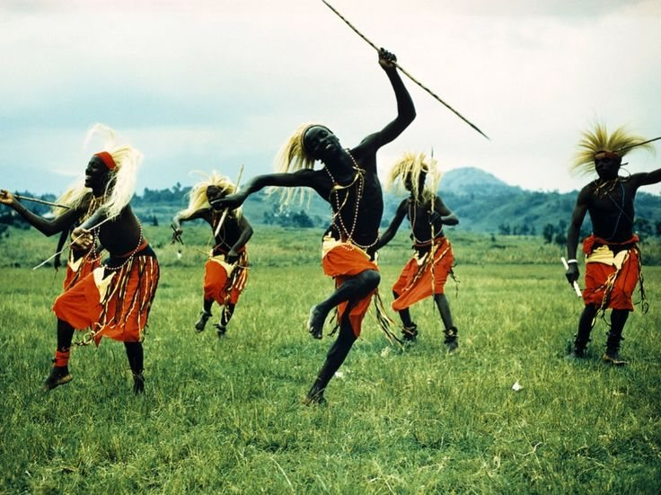
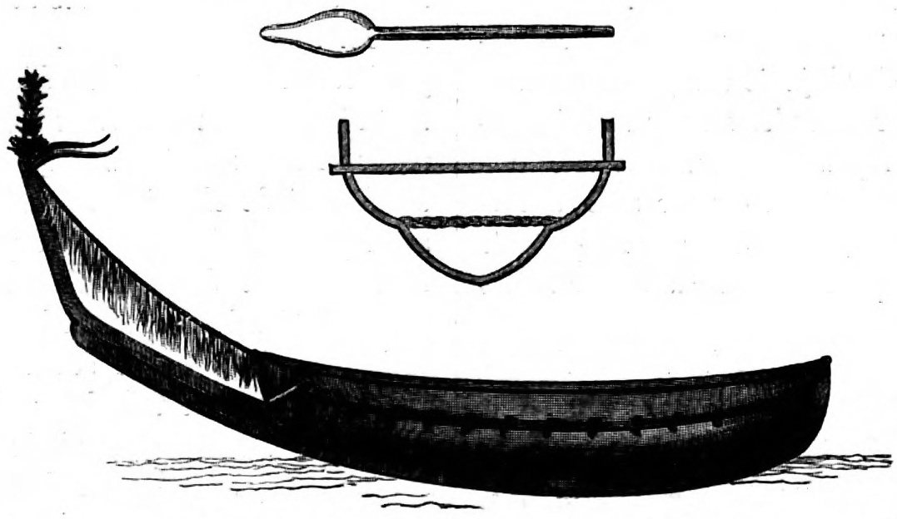

PEOPLES & CULTURES / UGANDAMANY PEOPLES.
MANY PEOPLES.
MANY WAYS
OF KNOWING.
Names. Histories. Knowledge passed from one generation to another.
Explore ↓
NAMES LIVE
WITH PEOPLE.
What is it called where you live?
What stories come with that name?

LOOK BACK / ASK AGAINWhat has been
What has been
passed on?
Names. Practices. Memories.
There is more than one way to know a place.
FROM BARK
TO CLOTH.

A living connection.
Among the Baganda, barkcloth making brings together the Mutuba tree, skilled craft and cultural memory. The tree is Ficus natalensis.
Explore the tradition · UNESCO ↗WHAT IS IT CALLED
WHERE YOU LIVE?

A name opens a conversation.
Which language is it from? Who uses it? What memories and knowledge travel with it?
Find the scientific name ↗WHO TELLS
THE STORY?
Begin with the people whose knowledge it is.
Follow the sources ↗